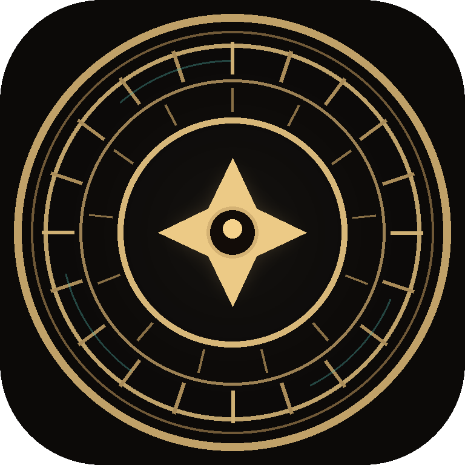

Berühre das Siegel
Zugang zum verborgenen Archiv
Tzolkin
Das Rad der 260 Tage · 13 Töne, 20 Zeichen
Archiv
Drei Dateien liegen unter dem Siegel. Sie entfalten sich erst, wenn du sie öffnest – als hätte jemand gerade erst begonnen, sie zu lesen.
Fragment 0/3 entschlüsselt
Fragment
Remote Viewing
Fünf Minuten. Atme. Halte den Blick weich. Schreibe oder zeichne, was kommt: Formen, Farben, Materialien, Stimmungen. Versuche nicht zu raten. Am Ende wird das Zielbild enthüllt.
Das Zielbild
Mandala
Berühre die Formen. Die Farbe spiegelt sich im Kreis. Ein neues Muster entsteht jedes Mal von selbst.
Intention
Welche Wahrheit suchst du heute?
Atem
Vier Sekunden ein, vier halten, vier aus, vier halten. Das Rad atmet mit dir.
Bereit
Berühre Beginnen
Zyklen: 0
Traum-Decoder
Zwanzig Minuten Power-Nap. Der Bildschirm verdunkelt sich. Ein Gong weckt dich, danach hältst du fest, was an der Schwelle zum Schlaf erschienen ist.
Ruhe
Die Augen dürfen fallen.
Welche Bilder sind aufgestiegen?